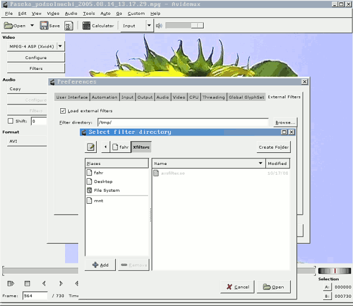
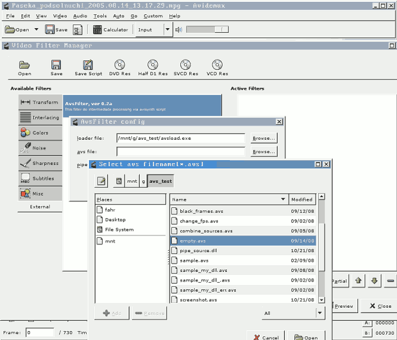
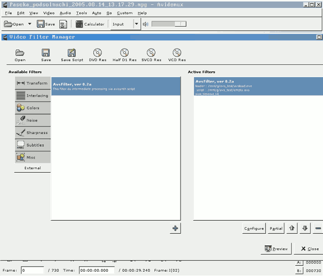

Download, compile and install avs2yuv. Check avisynth work with using recommendation from avs2yuv page.
Create empty avs script:
# winepath -w .winepath return windows-like path/filenames for directory/file
# winepath -w /home/user/.wine/drive_c/wine_app/avsload.exe
Start avidemux2, Menu->Edit->Preferences->External Filters, set checkbox "Load external filters" and select directory with avsfilter.so:
Preferences->External filters" width="591" height="512" align="top" border="5">Exit from avidemux2 and restart them from console. Read console output for following lines:
** Registering dynamic filters (/home/fahr/Xfilters) ** Searching for files .so Found 1 candidated Trying /home/fahr/Xfilters/avsfilter.so Terminate class is calling in start Loaded filter AvsFilter, ver 0.2a, version 1 ** Done registering dynamic filters**
Press Browse button and select script name:
Press Ok button. AvsFilter has been added to the filter list:
Press Close button and select Output view (instead of Input by default). Source clip should be view. Check play mode, seek on clip to begin/end and so on.
Create following script :